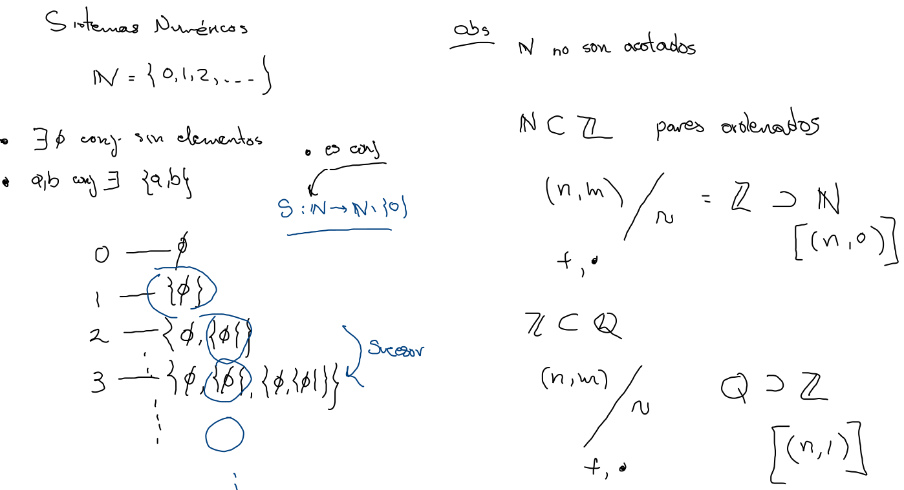
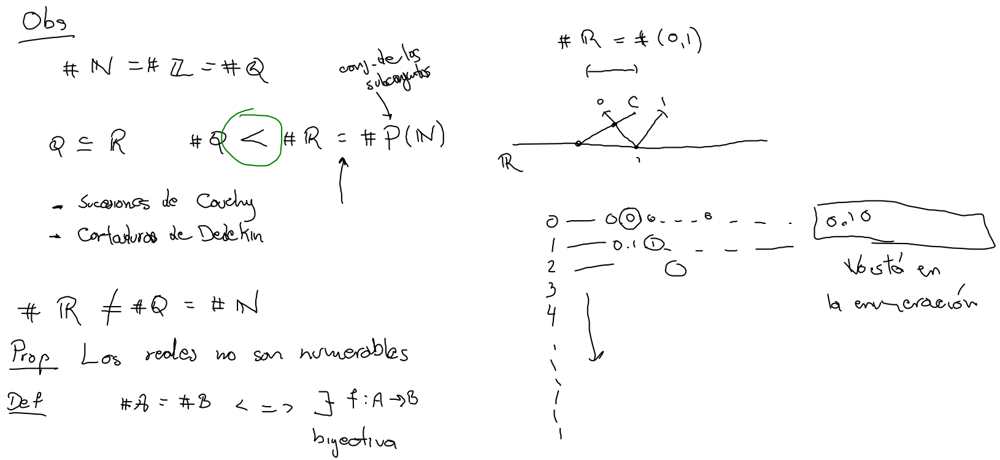
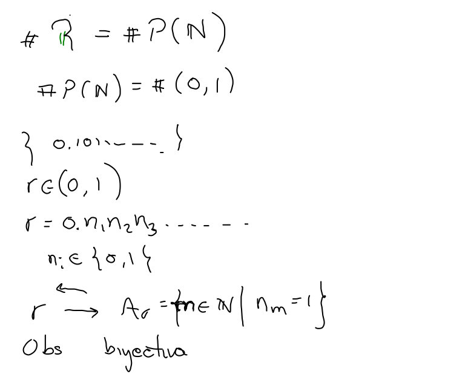
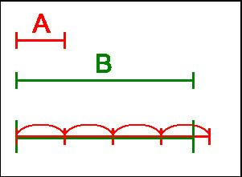
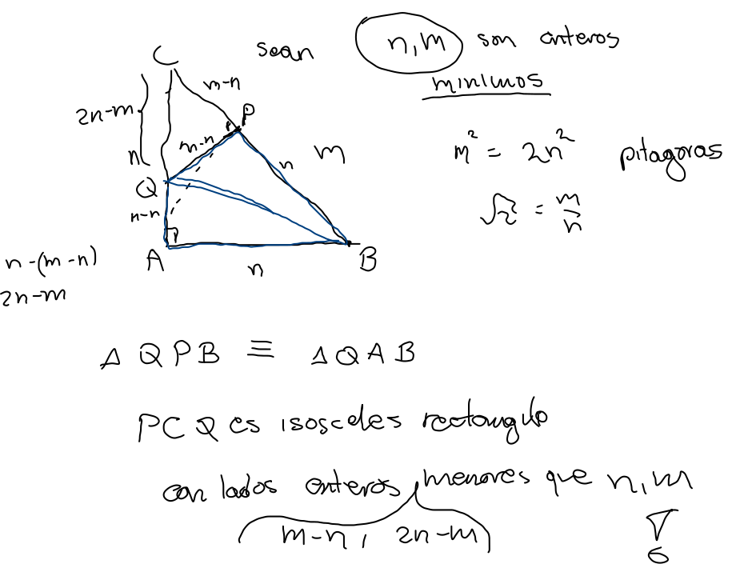

R
Sistemas numéricos
- N⊊Z⊊Q misma cardinalidad ℵ0.
- N construcción a partir de nada ∅, no acotado.
- Z,Q parejas ordenadas. 
- Q⊊R(⊊C⊊H) campos.
- Mayor cardinalidad 2ℵ0 . 

- Principio Arquimediano (campos ordenados) equivalentemente:
- Dados x,y positivos existe natural n tal que y<nx. 
- Dado x positivo existe natural n tal que 1/n<x<n.
- Dados x<y existe racional r tal que x<r<y.
Recta numérica
- Dados x real no negativo y natural n, existe un único real no negativo y, tal que yn=x.
- π,2∈R∖Q.
